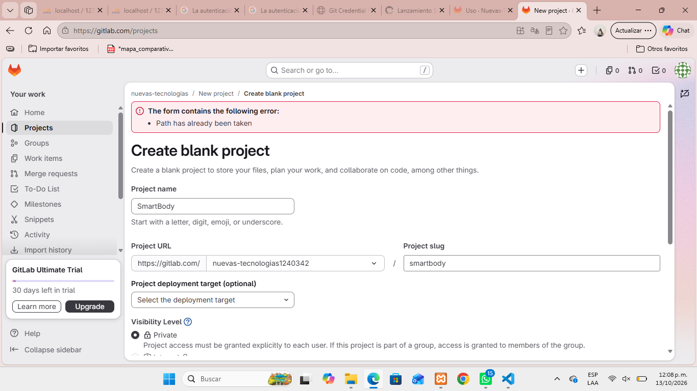
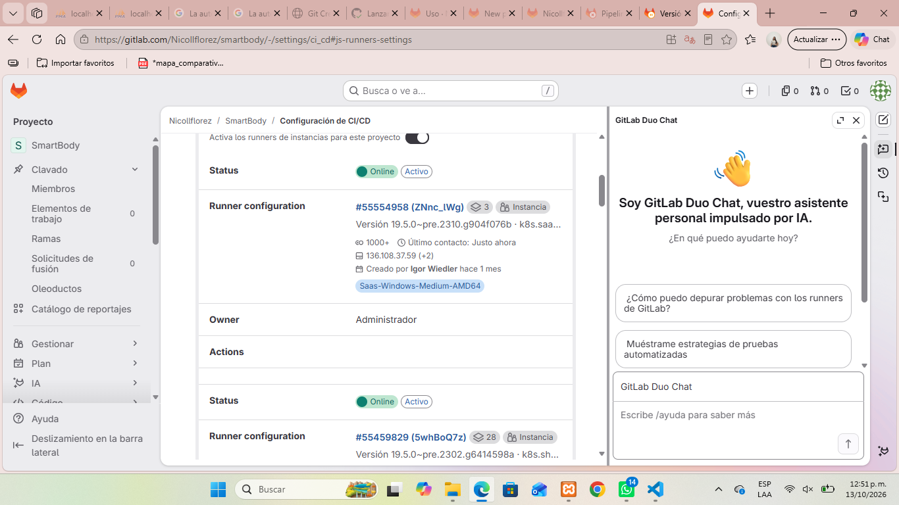
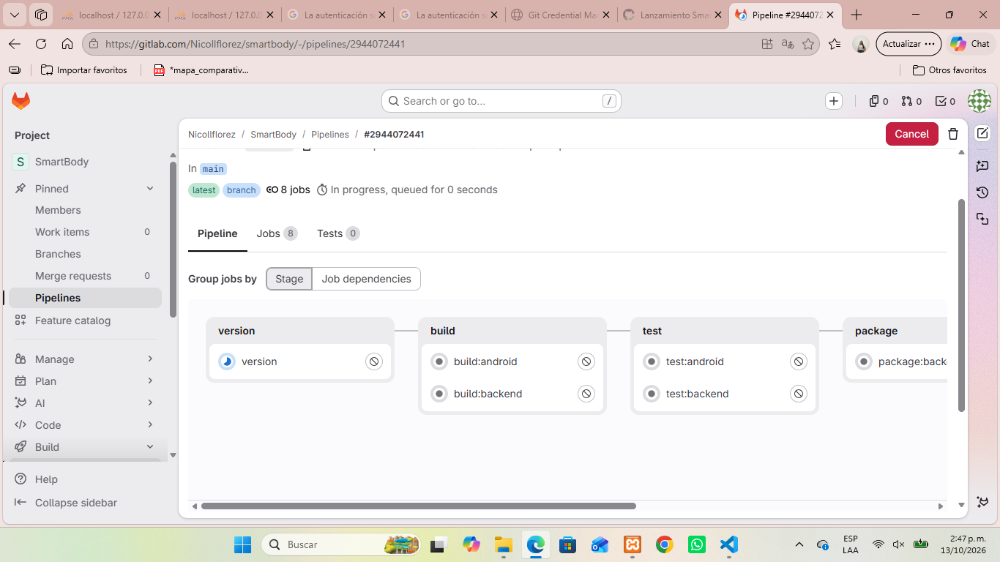
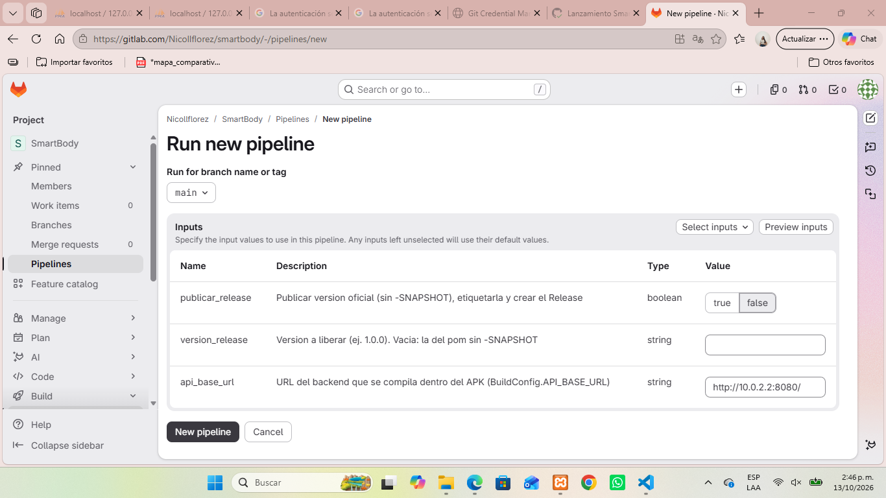
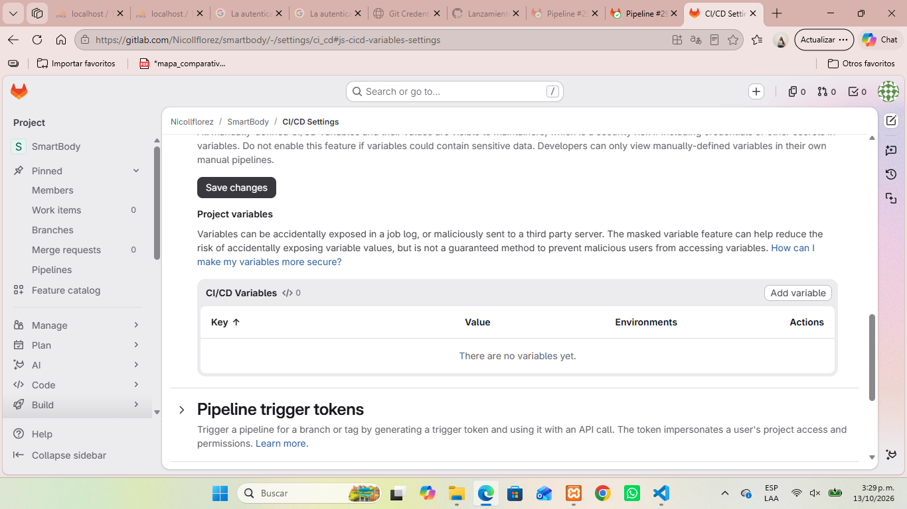
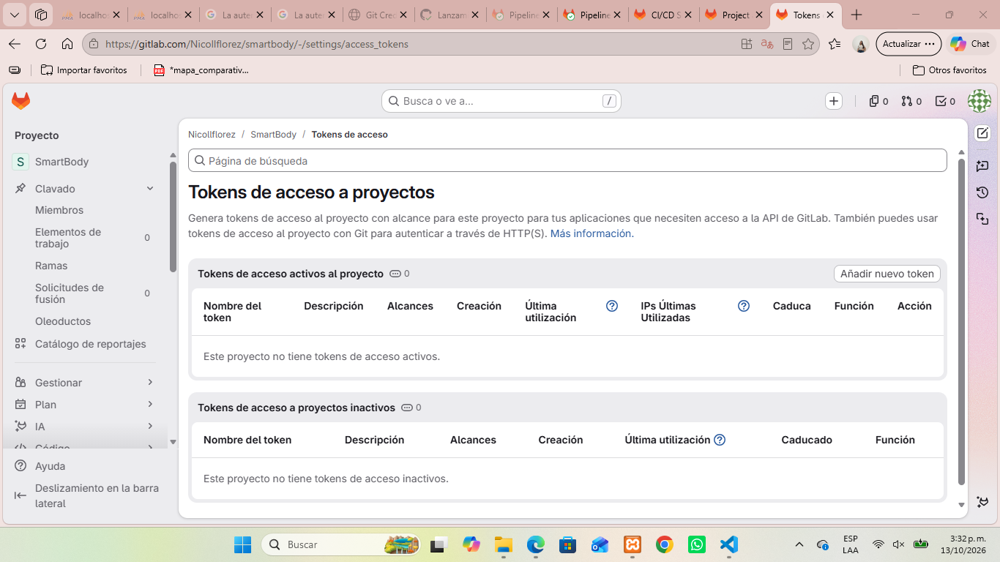
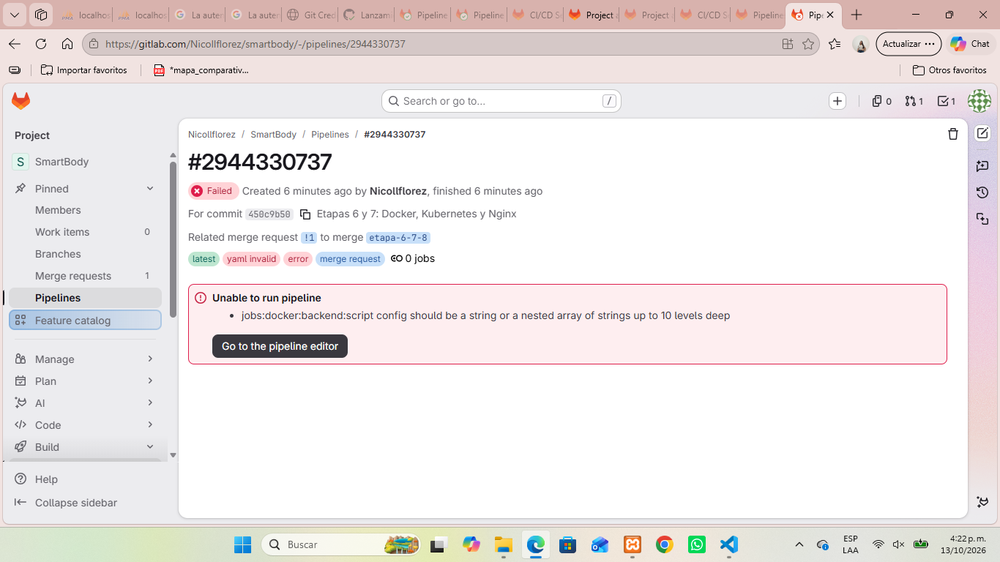

Etapa 5 · Lanzamiento con GitLab CI/CD (y lo que vino después: Docker, Kubernetes, Nginx, Prometheus/Grafana y microservicios)
Desde iniciar sesión con la cuenta de GitHub hasta publicar una versión con un clic de aprobación.
.gitlab-ci.yml: cómo se define un pipelineci.skip, limpiezaEntra en https://gitlab.com/users/sign_in y pulsa Sign in with GitHub (o Register → GitHub si es la primera vez).
GitHub pide autorizar a GitLab: Authorize GitLab. GitLab crea la cuenta con el mismo usuario (Nicollflorez).
Completa el formulario de bienvenida (rol, uso) y confirma el correo si lo pide.
Verificación de la cuenta: para usar los runners gratuitos de gitlab.com hay que validar la identidad (teléfono o tarjeta, sin cobro). Sin esto, el primer pipeline queda en failed sin jobs.
+ → New project → Create blank project.
Project name: SmartBody. Project URL: elige tu usuario, no un grupo privado: un proyecto no puede ser más visible que su grupo.
Visibility: Public (runners y registros sin límite; el profesor puede ver todo).
Desmarca "Initialize repository with a README": vamos a subir un repositorio que ya existe.
Create project. Resultado: https://gitlab.com/Nicollflorez/smartbody

El proyecto ya estaba en Git (y en GitHub). Solo se agrega GitLab como segundo remoto:
# en la carpeta del proyecto
git remote add gitlab https://gitlab.com/Nicollflorez/smartbody.git
git push -u gitlab main
Al hacer push por HTTPS, el Git Credential Manager de Windows abre una ventana para iniciar sesión en GitLab (con GitHub). Se hace una sola vez.
git merge gitlab/main --allow-unrelated-histories y volver a hacer push..gitattributes fuerza LF en mvnw, gradlew y *.sh: los runners son Linux.git update-index --chmod=+x backend/mvnw android/gradlew. Sin esto el job falla con Permission denied.backend/keys/, *.pem, .env están en .gitignore.Un runner es la máquina que corre cada job. gitlab.com ofrece instance runners compartidos (Linux, 2 vCPU) gratis para proyectos públicos.
Settings → CI/CD → Runners.
Interruptor "Enable instance runners for this project" activado; debajo se listan los runners Online.
Un job sin etiqueta (tags) cae en el runner Linux pequeño; algunos usan Docker-in-Docker (services: docker:dind) para crear contenedores dentro del job.

.gitlab-ci.yml (raíz del repo)# Opciones del formulario "Run pipeline" spec: inputs: publicar_release: { type: boolean, default: false } version_release: { type: string, default: "" } --- stages: [version, build, test, package, docker, deploy, publish, release] variables: PUBLICAR_RELEASE: "$[[ inputs.publicar_release ]]" MVN: "./mvnw -B -ntp" workflow: # cuándo se crea un pipeline rules: - if: $CI_PIPELINE_SOURCE == "merge_request_event" - if: $CI_COMMIT_BRANCH == "main" build:backend: # un job stage: build image: eclipse-temurin:17-jdk needs: [version] script: - cd backend - $MVN -DskipTests compile
.m2 y .gradle para no descargar dependencias cada vez.| Stage | Jobs | Qué hace |
|---|---|---|
| version | version | Lee la versión del pom.xml (1.0.x-SNAPSHOT); si es release, quita -SNAPSHOT y comprueba que el tag no exista. La publica como dotenv para todos los jobs. |
| build | build:backend, build:android, build:servicios | Compila con Maven (backend y 4 microservicios) y Gradle (APK release). En paralelo. |
| test | test:backend, test:android, test:servicios | JUnit: 85 + 22 + 88 pruebas. Reportes a la pestaña Tests. Si falla, no se publica nada. |
| package | package:backend, package:servicios | Empaqueta los jars (artefactos del pipeline). |
| docker | docker:backend, docker:servicios (matriz ×4) | Kaniko construye las imágenes a partir del jar ya probado y las sube al Container Registry. |
| deploy | nginx:validate, k8s:validate, k8s:kind, k8s:kind:microservicios | Valida Nginx y manifiestos; crea un clúster kind dentro del runner, despliega y ejecuta 21 peticiones end-to-end (Newman). |
| publish | publish:snapshot / publish:release (manual) | Sube jar y apk al Package Registry. En release espera el botón ▶. |
| release | release | Commit "Release vX", tag, bump a la siguiente versión y Release de GitLab con enlaces. |
Cada git push a main crea un pipeline: Build → Pipelines.
Entra al pipeline: el grafo muestra las fases y el estado de cada job (azul: corriendo, verde: ok, rojo: fallo, gris: en espera).
Clic en un job → log completo. Al final: Job succeeded o la causa del fallo.
Pestaña Tests: suites JUnit con pasadas/fallidas por job.
Botón Download (artefactos) y Retry por job.

Cumple el rol de Nexus/Artifactory sin instalar nada: un repositorio Maven propio del proyecto. Cada compilación que pasa las pruebas deja el jar y el apk versionados.
# job publish (.gitlab-ci.yml)
$MVN -s ../devops/maven/settings.xml deploy:deploy-file
-DrepositoryId=gitlab
-Durl=$CI_API_V4_URL/projects/$CI_PROJECT_ID/packages/maven
-DpomFile=pom.xml -Dfile=target/smartbody-backend-$VERSION.jar
# devops/maven/settings.xml: autenticación con el token del job
<server><id>gitlab</id>
<configuration><httpHeaders><property>
<name>Job-Token</name><value>${env.CI_JOB_TOKEN}</value>
</property></httpHeaders></configuration>
</server>
Deploy → Package Registry: com/smartbody/smartbody-backend y smartbody-android, versiones 1.0.x-SNAPSHOT (desarrollo, se sobreescriben) y 1.0.1 … 1.0.4 (oficiales).
CI_JOB_TOKEN lo crea GitLab para cada job: no hay que guardar contraseñas.backend/pom.xml; el pipeline la propaga al APK.Build → Pipelines → New pipeline, rama main.
En Inputs: publicar_release = true; version_release vacía (usa la del pom sin -SNAPSHOT) o una concreta; api_base_url = URL real del servidor para el APK.
New pipeline. Corre build, test, package, docker, deploy… y se detiene en publish:release con un botón ▶: esa es la aprobación del lanzamiento.
Al pulsar ▶: publica jar y apk oficiales; el job release crea el commit Release vX.Y.Z, el tag, el commit X.Y.Z+1-SNAPSHOT y el Release en Deploy → Releases.

Settings → CI/CD → Variables → Add variable.
Key GITLAB_PUSH_TOKEN, Value el token, Masked (nunca aparece en logs), Protect desmarcado, Environments: All.
En el job se usa como variable de entorno: $GITLAB_PUSH_TOKEN. Si no existe, el job release salta el commit de versión (lo avisa en el log).
CI_JOB_TOKEN: Package/Container Registry.CI_REGISTRY, CI_REGISTRY_USER, CI_REGISTRY_PASSWORD, CI_REGISTRY_IMAGE: Kaniko.CI_COMMIT_BRANCH, CI_COMMIT_SHA, CI_PIPELINE_IID, CI_PROJECT_ID, CI_API_V4_URL.
Un project access token es una "cuenta de servicio" del proyecto. Se crea en Settings → Access tokens → Add new token.
| Para qué | Rol | Scope |
|---|---|---|
Que el job release haga commit y push a main | Maintainer | write_repository |
| Borrar pipelines, crear Releases por API | Maintainer | api |
| Solo leer (consultas, paneles) | Reporter | read_api |
glpat-…) se muestra una sola vez: cópialo al crearlo.
docker:servicios: stage: docker image: { name: gcr.io/kaniko-project/executor:v1.23.2-debug, entrypoint: [""] } needs: [version, package:servicios] retry: 2 parallel: matrix: - SERVICIO: [auth, planes, progreso, admin] script: - echo "{\"auths\":{\"$CI_REGISTRY\":{\"auth\":\"$(printf %s:%s $CI_REGISTRY_USER $CI_REGISTRY_PASSWORD | base64)\"}}}" > /kaniko/.docker/config.json - /kaniko/executor --context $CI_PROJECT_DIR/services --dockerfile $CI_PROJECT_DIR/services/Dockerfile --build-arg SERVICIO=$SERVICIO --build-arg VERSION=$VERSION --destination $CI_REGISTRY_IMAGE/$SERVICIO:$VERSION
backend, auth, planes, progreso, admin, con tags 1.0.x-SNAPSHOT, 1.0.4 y latest (solo desde main).Los cambios grandes (Etapas 6-8, pruebas e2e, microservicios) se hicieron en ramas para no tocar main hasta tener el pipeline en verde.
git checkout -b etapa-6-7-8 # ... cambios y commits ... git push -u gitlab etapa-6-7-8 \ -o merge_request.create \ -o merge_request.target=main \ -o merge_request.title="Etapas 6 y 7"
merge_request_event): valida antes de integrar.git merge --ff-only y push a main).| MR | Contenido | Resultado |
|---|---|---|
| !1 | Docker, Kubernetes, Nginx, Prometheus/Grafana | 3 iteraciones (YAML, kind con dind) → verde |
| !2 | Pruebas end-to-end de la API (Postman/Newman) | verde a la primera |
| !3 | 4 microservicios + gateway | 3 iteraciones (Kaniko transitorio, CPU de MySQL) → verde |
main con el pipeline en rojo.k8s:kind: image: docker:27 services: [docker:27-dind] # Docker-in-Docker script: - kind create cluster --name smartbody --config k8s/ci/kind.yaml - kubectl config set-cluster kind-smartbody --server=https://docker:$PUERTO --insecure-skip-tls-verify=true - BACKEND_IMAGE=$CI_REGISTRY_IMAGE/backend:$VERSION sh k8s/desplegar.sh - curl -sf http://docker:30080/api/ping - newman run tests/e2e/smartbody.postman_collection.json --env-var baseUrl=http://docker:30080 --reporters cli,junit after_script: # diagnóstico aunque falle - kubectl -n smartbody get pods -o wide - kubectl -n smartbody get events | tail -25 - kind delete cluster --name smartbody
k8s/.| Síntoma | Causa | Solución |
|---|---|---|
| Pipeline failed con 0 jobs | Cuenta sin validar | Validar la cuenta; relanzar |
| "yaml invalid: script should be a string" | Una línea con : (dos puntos + espacio) se leía como mapa | Entrecomillar la línea |
Permission denied en mvnw | Sin bit de ejecución desde Windows | git update-index --chmod=+x |
Job release falla sin motivo claro | Sintaxis de bash (<<<) en imagen Alpine (sh) | Sintaxis POSIX |
Etiqueta v1.0.2 ya existe | Se relanzó sin cambiar versión | Comprobación al inicio del job version |
kind: "timed out waiting for control plane" | API server en localhost del dind | apiServerAddress: 0.0.0.0, sin --wait |
MySQL Pending 5 min | Suma de requests de CPU > 2 vCPU | Bajar requests a 50-100m |
| Release: "Links have duplicate…" | Dos enlaces con la misma URL | URLs únicas por imagen |

El mensaje de error del pipeline dice exactamente qué job y qué clave están mal.
Un cambio solo de documentación no necesita 25 minutos de pipeline:
git push -o ci.skip gitlab main
GitLab registra un pipeline Skipped (gris): no es un error.
retry: 2 en jobs con fallos transitorios (Kaniko)..gitlab-ci.yml: el retry usa la versión vieja.api: devops/gitlab/limpiar-pipelines.sh borra failed/skipped/canceled y conserva los verdes.after_script ya imprime pods, eventos y logs.smartbody-backend, smartbody-androidbackend, auth, planes, progreso, admindocs/GESTION_DE_LANZAMIENTO.md — Etapa 5docs/DESPLIEGUE_Y_OPERACION.md — Etapas 6, 7 y 8docs/ARQUITECTURA_MICROSERVICIOS.mddocs/PLANIFICACION_TRELLO.md — Etapa 1tests/e2e/ — colección Postman.gitlab-ci.yml, Jenkinsfile, .github/workflows/Smartbody · ciclo de vida del software con herramientas open source
GitLab CI/CD · Docker · Kubernetes · Nginx · Prometheus · Grafana · Postman/Newman · Kaniko · kind